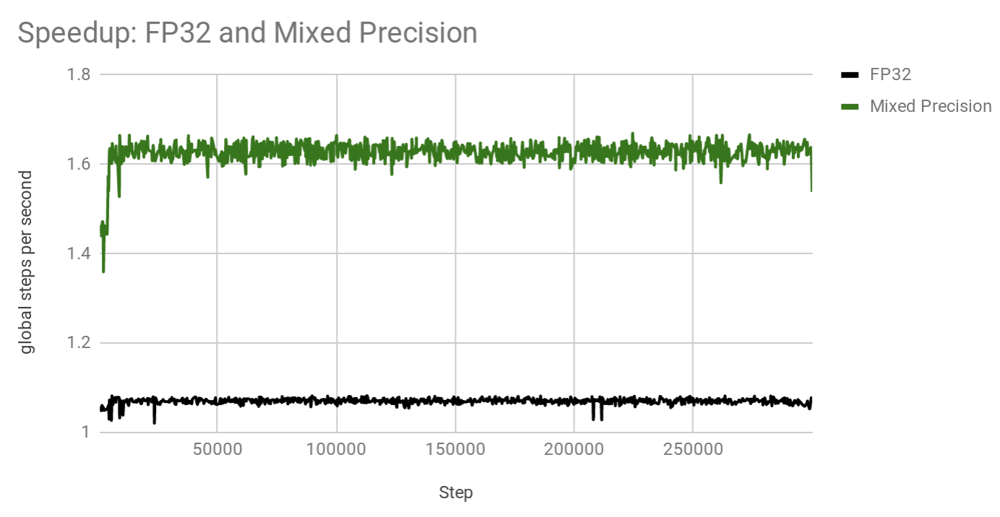

Transformer¶
Model¶
This model is based on Google Transformer which was introduced in Attention is all you need by A. Vaswani, etal.
Baseline config: transformer-base.py
Transformer model is based solely on attention mechanisms, without any recurrent or convolutional layers. Common source and target vocabulary is used to share input/output embedding Tokenization of input and output is done with SentencePiece (SentencePiece) It is very good for neural machine translation tasks and this particular configuration achieves SacreBLEU of 26.4 on WMT 2014 English-to-German translation task ( checkpoint TBD ).
Training¶
It also shows good multi-GPU scalability. Below are the scaling factors for batch size of 256 per GPU when training in mixed-precision and using or not using Horovod:
Note that batch size of 256 per GPU results in the total batch size of X*256 when X GPUs are used. For example, if 16 GPUs are used, then the total batch size (or algorithmic batch size) is 16*256=4,096.
Here is an example command of how to train such model on a 4-GPU machine:
mpirun --allow-run-as-root --mca orte_base_help_aggregate 0 -mca btl ^openib -np 4 -H localhost:4 -bind-to none --map-by slot -x LD_LIBRARY_PATH python run.py --config_file=example_configs/text2text/en-de/transformer-bp-fp32.py --mode=train
Then run inference like this:
python run.py --config_file=example_configs/text2text/en-de/transformer-bp-fp32.py --mode=infer --infer_output_file=raw_fp32.txt --num_gpus=1 --use_horovod=False
De-tokenize output:
python tokenizer_wrapper.py --mode=detokenize --model_prefix=wmt16_de_en/m_common --decoded_output=fp32.txt --text_input=raw_fp32.txt
And compute BLEU score:
cat fp32.txt | sacrebleu -t wmt14 -l en-de > fp32.BLEU
You should get around 26.4 after 300K iterations for the base model.
Mixed Precision¶
OpenSeq2Seq allows you to train transformer-based model in mixed precision without changing code or any of the hyper-parameters.
All you need to do is change dtype in the configuration file to: mixed and turn on automatic loss scaling: "loss_scaling": "Backoff".
Below plot demonstrates that training curves for float32 and mixed precision are nearly identical (same hyperparameters are used, only data type differ).
These configurations are trained on 4 GPUs using batch size of 256 per GPU. While training curves per step look very similar, mixed precision model trains significantly faster. See plot below which shows how many steps per second each model achieves:
Thus, in this particular configuration, mixed precision is about x1.53 times faster. Note that this was measured on a pre-release versions of software. Your speedups will vary depending on the number of GPUs, batch size per GPU, interconnect between GPUs and software versions. Since mixed precision almost halves memory requirements per GPU, it is sometimes possible to fit a double batch size in mixed precision model, therefore, achieving even bigger speedups.